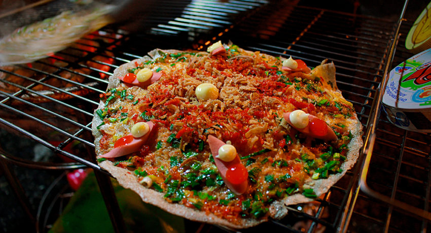

Homepage
Bánh tráng nướng

Description
During summer months, I love eating and making simpler dishes because it gets pretty hot in my kitchen. Some dishes I've been eating are my turmeric fish, com suon, and steamed chicken. Recently, I discovered a new to me Vietnamese dish called Vietnamese Pizza. Yes VIETNAMESE pizza. It's such a cool and inventive dish! It looks like a normal pizza, but it is way easier to make. The “pizza dough” is made with rice paper, and the “tomato sauce” is just eggs. The resulting pizza has a crispy texture with all these wonderful, savory toppings on it. It's seriously, in my opinion, one of the coolest Vietnamese dishes out there.
Ingredients
Ground Pork Topping
- 1/2 lb ground pork
- 1/2 tsp salt
- 1/4 tsp white pepper
- 1/2 tsp granulated sugar
- 1 tsp fish sauce
Scallion Oil
- 2 stalks green onions, minced
- 1/2 cup vegetable oil
Other Ingredients
- 8 pieces rice paper
- 3 eggs
- 1/4 cup fried shallots
- 1/4 cup sriracha
- 1/4 cup Kewpie mayonnaise
Steps
Prepare your toppings.
- Ground pork: Mix all the ingredients for the ground pork and brown in a large pan until the pork is cooked through. Set aside.
- Scallion oil: Heat vegetable oil over high heat until hot (1-2 minutes). Pour over minced green onions and set aside.
- Eggs: Whisk eggs and set aside.
Now you're ready to make your pizzas!
- Make sure your toppings are prepped and accessible nearby. Heat your grill pan over high heat until it is hot.
- Take 2 rice papers. Wet one side of one and press the other one on top. Place both on the grill pan.
- Use the back of a spoon to press the rice papers onto the grill pan. Move the spoon in a circular motion to make sure all parts of the rice paper have even exposure to the heat and no air bubbles form between the rice papers. Because the rice paper is dry, it won't want to lie flat, so moving the spoon in a circular motion will get it to lie flat on the pan.
- Cook the rice papers until they turn white and opaque. Once it becomes opaque, you can now place your toppings on the pizza.
- With the rice paper still on the grill pan, smear 2-3 spoonfuls of scallion oil. Follow with 2-3 spoonfuls of whisked eggs. Use your spoon to smear the scallion oil and eggs, so it covers the entire rice paper. Cook for ~10 seconds.
- Add 2-3 spoonfuls of the ground pork. Remove from the grill pan.
- Drizzle sriracha and kewpie mayonnaise on top. Finish it off with fried shallots.
- Repeat this process until you run out of rice paper or toppings.